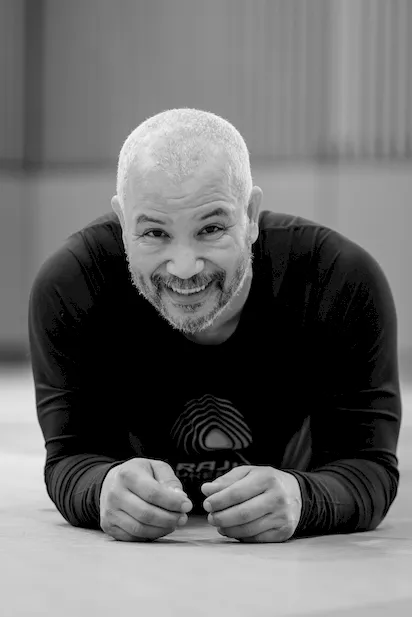

A gyakorlatok szinte kivétel nélkül a gravitációnak való megadással, vagyis a föld vonzó erejének befogadásával, átvételével (ukemi) indulnak. Ennek megfelelően az alapvető mozgásformák a gördülések, forgások és a gurulások, amelyek a gravitációs erő "visszaforgatásával” plusz energiát, illetve lendületet biztosítanak a gyakorlatok további erősítő-nyújtó részeihez: a fölállásokhoz, fölülésekhez, tolódzkodásokhoz, illetve a nyújtó mozdulatokhoz.
A különböző összetettségű gyakorlatokban gyakran párhuzamosan történik a test megerősítése és hajlékonyabbá tétele, a figyelem, a koordináció és az egyensúly fejlesztése. Mozgás közben a test majd minden része konkrét fizikai kapcsolatba kerül a talajjal, ami a hétköznapi mozdulatainkban ritkán, vagy soha nem tapasztalt impulzusokat ad a bőrfelületnek, az izomzatnak és a csontoknak, ízületeknek egyaránt. Természetesen nagy hangsúlyt kap a mozdulatoknak megfelelő légzés is.
Amire számíthatunk
A fizikai teljesítmény és a közérzet javulása A tüdőkapacitás növekedése, jobb oxigénellátás Az izmok megerősödése, tónusosabbá válása, különös tekintettel a törzs izomzatára A ízületi mozgékonyság és hajlékonyság növekedése A sérülésveszély csökkenése, különösképpen a rendszeresen sportolóknál és az élsportolóknál A stressz csökkentése, és a lelki egyensúly visszaállítása A test kiegyensúlyozása, a tömegközpont megtalálása Az eséstől, vagy zuhanástól való félelem legyőzése, a körülöttünk lévő tér újraértékelésével, újratöltésével Súlycsökkenés Folyamatos és teljes körű testmasszázs Egyenes, elegáns, kisugárzó (test)tartás Ellazultság, öröm, jó közérzet

Rövid interjú Jaff Rajival, az új edzésforma létrehozójával
Jaff, miért fejlesztette ki ezt a módszert, amelyben a gyakorló partner tulajdonképpen maga a föld?
Hosszú évek Aikido oktatása során a saját magam és a tanítványaim testén kísérletezve tapasztaltam ezeknek a mozdulatoknak a jótékony hatásait. A saját és a tanítványaim folyamatos pozitív visszajelzései meggyőztek arról, hogy mennyire fontos ezt a módszert, amelyet RAJI UKEMI FITNESS-nek neveztem el, mindenki számára elérhetővé tenni.
Köztudott, hogy az emberi lény fogantatásától kezdve képes vízben mozogni, még ha csak egy igen leszűkített térben is. A születés után, pedig arra kényszerül, hogy önállóan lélegezzen. Hamar meg kell találnia a gravitációs központját, hogy mozgása szabaddá váljon, hiszen a rugalmas közeg, vagyis a magzatvíz, amely korábban körbevette, már nincs jelen. A bőrrel rugalmasan érintkező határok eltűnésével, és a teste növekedésével, fokozatosan elfelejti azt az érintést, amely számtalan információval és a jólét határtalan érzésével látta el.
A RAJI UKEMI FITNESS a test, gördülések és gurulások segítségével való újra birtokba vételéről szól. A gyakorlás során újra felfedezhetünk számos elveszettnek hitt belső és külső érzetet. A gyakorlatokkal tudatosan fejlesztjük a mozdulatok, a hatékonyság, a hajlékonyság és a légzés minőségét. Pontosan úgy mint egy testmasszázs során, minden (az egyszerre szilárd és rugalmas) tatamival érintkező testfelület és testrész stimulálódik.
A körülöttünk lévő űr újra megtelik és egy állandó, közvetlen érintkezés élményét adja, amely egyensúlyt és önbizalmat teremt számunkra.
Próbálják ki a RAJI UKEMI FITTNESS-t, és megértik!
Jaff 1960-ban született Casablancán. Kora gyermekkorától Franciaországban nevelkedik és a mai napig Bretagneban él. Fiatalon számtalan sporttal megismerkedik: szertornázik, atletizál, de mindenekelőtt kiemelkedő tehetségű a kajak illetve a futball területén. Húszévesen felhagy a versenysporttal, és teljes odaadással AIKIDÓt kezd tanulni, majd tanítani. Rendkívüli tehetségének, és teljes elkötelezettségének köszönhetően, hamarosan hivatásos harcművészeti oktatóvá válik.
Az AIKIDO mellett más, ősi harcművészetet is gyakorol és oktat és több Francia és nemzetközi harcművészeti szervezet technikai felelőse. Saját iskolája az Ecole de BUDO RAJI több évtizedes nemzetközi oktatómunka eredményeként 2001-ben jön létre. Magyarországon 20 éve vesz részt a japán harcművészetek terjesztésében és fejlesztésében. Évente több alkalommal tart szemináriumokat Budapesten és más városokban.
UKEMI - Japán szó, illetve szóösszetétel. Fordítják többek között "testkontrollnak”, és elsősorban a harcművészetekben használják.
A testre kívülről ható erők (ütések, dobások, leszorítások, esések stb.) sérülésmentes befogadására kialakított megfelelő mozdulatok, testtartások, és végső soron az erre alkalmas testfelépítés megnevezése. Ha egy kicsit kibővítjük az eredeti jelentést az UKEMIvel utalhatunk a helyesen felépített, a külső és belső világunkra érzékenyen reagáló, a rá ható erőket nem elszenvedő, hanem tudatosan befogadó és felhasználó emberi testre, illetve az egész emberi szervezetre, és annak a természetesen kialakított tudatos mozgásaira, amely tökéletes összhangban van földdel és annak vonzóerejével, a gravitációval.
FITNESS - Mára már nemzetközi szó, amely "fittséget”, edzettséget jelent, illetve olyan edzésformát amely, az edzettség kialakítását célozza.
Érdekes és fontos viszont, hogy az eredeti angol szó jelentése: megfelelés, oda-, bele-, összeillés, ami a japán AIKIDO kifejezés AI = összeilleszt elemével lényegében azonos jelentésű. A RAJI UKEMI FITNESS megnevezésben olyan tevékenységet, mozgást, illetve edzésformát jelent, amely során a test különböző részeinek: a csontváznak, az izomzatnak, a keringési rendszernek, a légzésnek, az idegrendszernek, bőrnek, stb. olyan funkcionális és harmonikus összerendezésére, összeillesztésére törekszünk, amely a hétköznapi ember számára ritkán tapasztalt testi és lelki kiegyensúlyozottságot és egységet teremt.